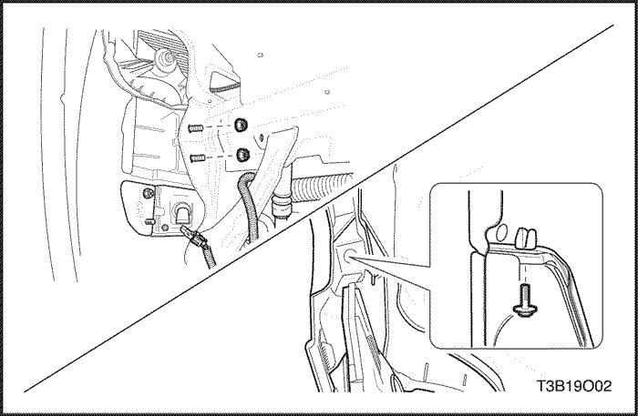
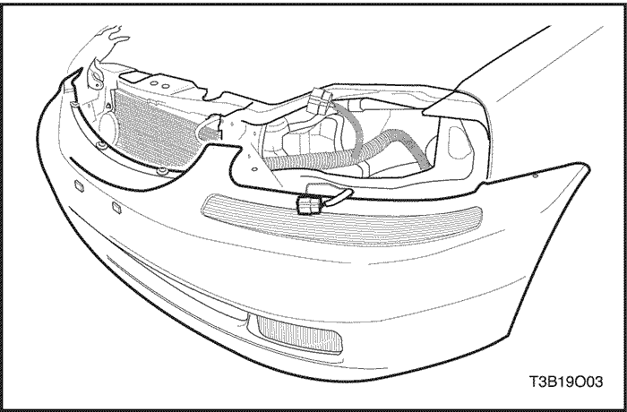
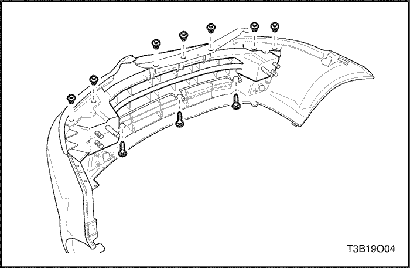
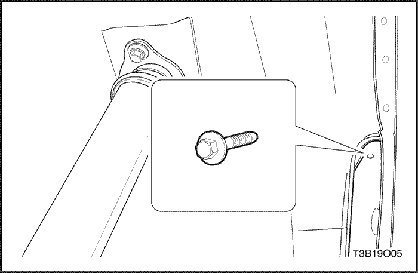
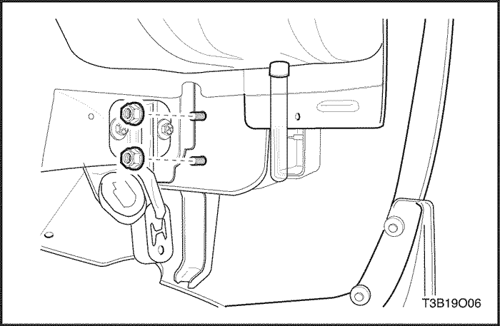
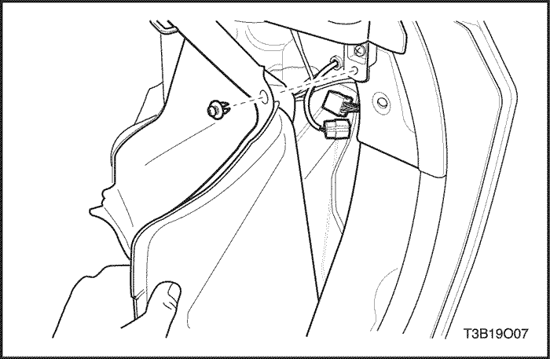
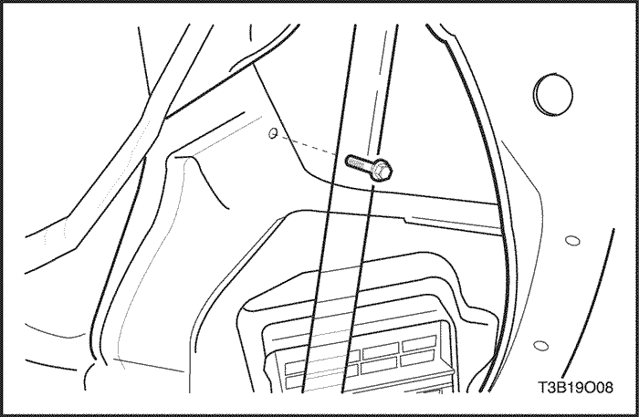
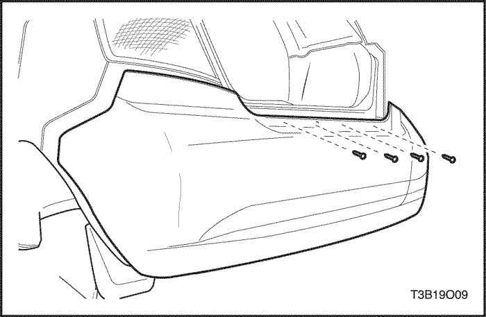
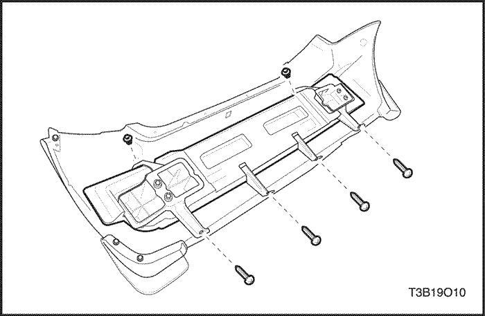

SECCIÓN 9O
PARACHOQUES Y FACIAS
ESPECIFICACIONES
Especificaciones de apriete
| Aplicación | N•m | Lb-Ft | Lb-pulgada |
| Tornillos detrás de la facia | 5.5 | - | 49 |
| Tuercas de la barra anti-impactos del parachoques delantero | 27 | 20 | - |
| Tornillos del guardasalpicaduras delantero | 1.5 | - | 13 |
| Pernos de la facia del compartimento de equipajes | 5.5 | - | 49 |
| Tornillos del guardabarros | 1.5 | - | 13 |
| Tuercas del absorbedor de energía del parachoques trasero | 27 | 20 | - |
| Tornillos de la facia superior trasera | 1.5 | - | 13 |
| Pernos del guardasalpicaduras | 1.5 | - | 13 |
| Tuercas del guardasalpicaduras | 1.5 | - | 13 |
| Tornillos del guardasalpicaduras | 1.5 | - | 13 |
| Pernos del panel de tapizado | 10 | - | 89 |
MANTENIMIENTO Y REPARACIÓN
Servicio en el vehículo


Facia del parachoques delantero
Procedimiento de desmontaje
- Desconecte el cable negativo de la batería.
- Retire las ruedas delanteras. Consultar la sección 2E, neumáticos y ruedas.
- Retire los tornillos, pernos, tuercas y el guardasalpicaduras de hueco de rueda delantera.

- Retire los faros delanteros, luces de aviso de giro, luces de aviso de giro laterales y los faros antiniebla delanteros. Consulte Sección 9B, Sistema de alumbrado.
- Retire los tornillos de los guardasalpicaduras.
- Retire las tuercas de la facia
- Retire los tornillos de debajo de la facia.

- Retire los tornillos en la parte superior de la facia.
- Quite la facia del parachoques delantero.
Procedimiento de Instalación
Aviso: Los metales diferentes que están en contacto entre sí, son rápidamente afectados por la corrosión. Asegúrese de utilizar los sujetadores adecuados para evitar corrosión prematura.
- Instale la facia del parachoques.
- Instale los tornillso de la parte superior de la facia.
- Instale los tornillos debajo de la facia.
- Instale las tuercas detrás de la facia.
Apretar
Apriete las tuercas de la viga anti impactos del parachoques delantero a 27 N•m (20 Ib-ft).
- Instale los tornillo en los guardasalpicaduras.
Apretar
Apriete los tornillos del guardasalpicadura delantero a 1.5 N•m(13 lb-in).
- Instale los faros, luces de aviso de giro, luces de aviso de giro laterales y los faros antiniebla delanteros. Consulte Sección 9B, Sistema de alumbrado.
- Instale los guardasalpicaduras de hueco de rueda delantera con los tornillos, los pernos y las tuercas.
- Instale las ruedas delanteras. Consultar la sección 2E, neumáticos y ruedas.
Apretar
Apriete los tornillos del guardasalpicaduras a 1.5 N•m(13 lb-in).
Apriete los pernos del guardasalpicaduras a 1.5 N•m (13 lb-in).
Apriete las tuercas del guardasalpicaduras a 1.5 N•m (13 lb-in).
- Conecte el cable negativo de la batería.

Viga de impacto del parachoques delantero
Procedimiento de desmontaje
- Quite la facia del parachoques delantero. Consulte "Facia del parachoques delantero" en esta sección.
- Quite la viga de impacto del parachoques delantero.
Procedimiento de Instalación
- Instale la viga de impacto del parachoques delantero.
- Instale la facia del parachoques delantero. Consulte "Facia del parachoques delantero" en esta sección.

Facia del parachoques trasero
Procedimiento de desmontaje
- Quite las ruedas traseras. Consultar la sección 2E, neumáticos y ruedas.
- Quite los tornillos y los guardabarros.
- Quite los tornillos y los guardasalpicaduras.
- Quite los tornillos situados detrás de la facia.

- Retire las tuercas detrás del absorbedor de energía del parachoques trasero.

- Quite el cuadro de panel de tapizado trasero del compartimento de equipajes. Consulte la Sección 9G, Acabado Interior.
- Retire los pernos del compartimento de equipaje.

- Quite los pernos y los paneles de tapizado exterior detrás de las luces traseras.
- Quite los tornillos de la facia detrás de las luces traseras.

- Retire los tornillos superiores traseros de la facia.
- Retire la facia
Procedimiento de Instalación
Aviso: Los metales diferentes que están en contacto entre sí, son rápidamente afectados por la corrosión. Asegúrese de utilizar los sujetadores adecuados para evitar corrosión prematura.
- Instale la facia con los tornillos superiores traseros de la facia.
Apretar
Apriete los tornillos superiores traseros de la facia a 1.5 N•m (13 lb-in).
- Instale los tornillos de la facia detrás de las luces traseras.
- Instale los paneles de tapizado exterior detrás de las luces traseras con los pernos.
Apretar
Apriete los pernos del panel de tapizado a 10 N•m (89 lb-in).
- Instale los pernos del compartimento de equipaje.
Apretar
Apriete los pernos de facia del compartimento de equipaje a 5.5 N•m (49 lb-in).
- Instale los paneles de tapizado del cuarto trasero del compartimento de equipajes. Consulte Sección 9G, Tapizado interior.
- Instale las tuercas detrás del absorbedor de energía del parachoques trasero.
Apretar
Apriete las tuercas del absorbedor de energía del parachoques trasero a 27 N•m (20 lb-ft).
- Instale los tornillos situados detrás de la facia.
Apretar
Apriete los tornillos detrás de la facia a 5.5 N•m (49 lb-in).
- Instale los guardasalpicaduras con los tornillos.
Apretar
Apriete los tornillos del guardasalpicaduras a 1.5 N•m(13 lb-in).
- Instale los guardabarros con los tornillos.
Apretar
Apriete los tornillos del guardabarros a 1.5 N•m (13 lb-in).
- Instale las ruedas traseras. Consultar la sección 2E. neumáticos y ruedas.

Absorbedor de energía del parachoques trasero
Procedimiento de desmontaje
- Quite la facia del parachoques trasero. Consulte "Facia del parachoques trasero" en esta sección.
- Quite el absorbedor de energía.
Procedimiento de Instalación
- Instale el absorbedor de energía.
- Instale la facia del parachoques trasero. Consulte "Facia del parachoques trasero" en esta sección.
DESCRIPCIÓN GENERAL Y FUNCIONAMIENTO DEL SISTEMA
Parachoques
Los sistemas de parachoques están diseñados para soportar una colisión contra una barrera fija a 8 km/h (5 mph) o 4 km/h (2.5 mph) sin sufrir daños.
Después de absorber la energía de una colisión, estos sistemas del parachoques se restauran ellos mismos a sus posiciones originales. Tanto el parachoques delantero como el trasero disponen de un absorbedor de energía de espuma y una cubierta de polímero. La facia del parachoques trasero debe retirarse antes de poder acceder al absorbedor de energía y al parachoques. El conjunto de parachoques delantero puede retirarse como una unidad, o bien la cubierta de la facia puede retirarse por separado.